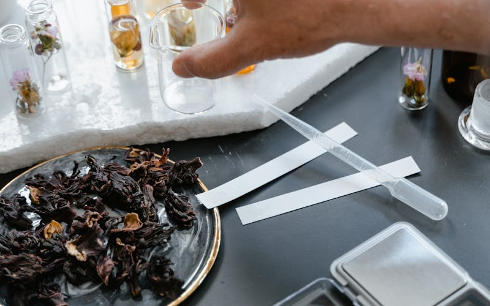
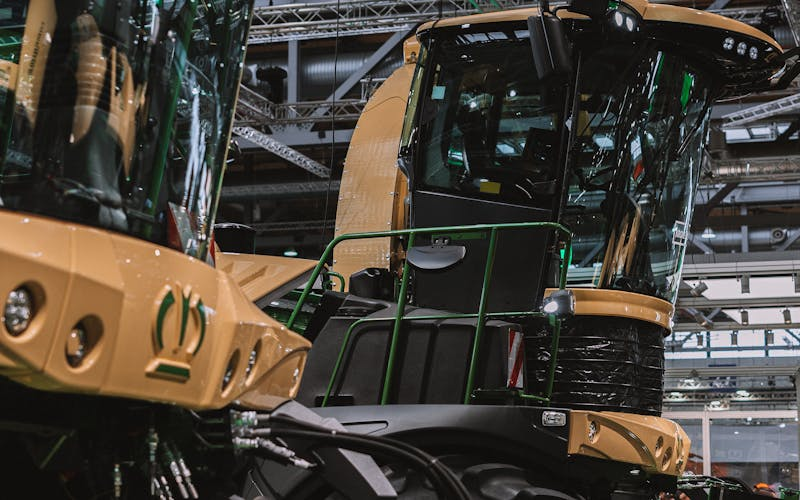

Du cœur du Maroc vers le mondeFrom the heart of Morocco to the world
Exportateur de caroube et de légumineuses de qualité supérieure, depuis la fertile région du Saïss. Le caroube marocain conquiert les marchés industriels de plus de 15 pays à travers le monde.Premium exporter of carob and legumes from the fertile Saïss region. Moroccan carob reaches industrial markets in over 15 countries worldwide.
La région du Saïss abrite des caroubiers centenaires sur un terroir unique. Les gousses sont récoltées à la main selon des méthodes ancestrales, transmises de génération en génération depuis les collines de Fès.The Saïss region shelters century-old carob trees on a unique terroir. Pods are harvested by hand using ancestral methods, passed down from generation to generation in the hills of Fès.
Saïss · Fès · MarocMorocco
02 — Sélection02 — Selection
Le Caroube dans toute sa puretéCarob in all its purity
Chaque gousse est triée à la main. Caroube brute, graines, pulpe, farine — notre gamme répond aux exigences de l'industrie mondiale de l'alimentation, de la pharmacie et de la cosmétique, avec traçabilité totale.Every pod is sorted by hand. Raw carob, seeds, pulp, flour — our range meets the demands of the global food, pharmaceutical and cosmetics industry, with full traceability.
Du Saïss au marché mondialFrom Saïss to global markets
Maîtrisant l'ensemble de la chaîne, de la récolte à la logistique internationale, nous exportons vers 15+ pays sur 3 continents. Europe, Asie, Moyen-Orient, Amériques — le caroube du Saïss s'invite partout.Controlling the entire chain from harvest to international logistics, we export to 15+ countries on 3 continents. Europe, Asia, Middle East, Americas — Saïss carob is everywhere.
15+ pays · 500+ tonnes / ancountries · 500+ tonnes / year
Notre gammeOur Range
Nos produitsOur Products
Des matières premières sélectionnées au cœur du Saïss, pour les marchés internationaux les plus exigeants.Selected raw materials from the heart of Saïss, for the world's most demanding international markets.
✦ Export
Caroube du SaïssSaïss Carob
Gousses brutes, graines, pulpe et farine de caroube — une gamme complète issue de caroubiers centenaires. Qualité constante, traçabilité totale, disponible en vrac ou conditionné selon vos spécifications industrielles.Whole pods, seeds, pulp and carob flour — a complete range from century-old carob trees. Consistent quality, full traceability, available in bulk or packaged to your industrial specifications.
Import / Export
LégumineusesLegumes
Lentilles, pois chiches, fèves, haricots — toutes variétés de légumineuses sélectionnées pour les marchés internationaux, avec traçabilité origine et contrôles qualité systématiques à chaque expédition.Lentils, chickpeas, fava beans, kidney beans — all legume varieties selected for international markets, with origin traceability and systematic quality controls on every shipment.
Nos légumineuses d'exportationOur Export Legumes
Sélectionnées directement auprès d'agriculteurs partenaires au Maroc et dans la région, nos légumineuses répondent aux normes d'hygiène et aux cahiers des charges des marchés européens et asiatiques.Sourced directly from partner farmers in Morocco and the region, our legumes meet the hygiene standards and specifications of European and Asian markets.
Ronds et dorés, nos pois chiches sont triés et calibrés pour les marchés européens (conserves, hummus, farine) et asiatiques. Disponibles en convention ou biologique. Moisture ≤ 14 %, calibres 6–9 mm sur demande.Round and golden, our chickpeas are sorted and calibrated for European (canned, hummus, flour) and Asian markets. Available conventional or organic. Moisture ≤ 14%, sizes 6–9 mm on request.
Calibres 6–9 mmSizes 6–9 mmBio disponibleOrganic available
Fèves sèches entières ou décortiquées, à destination des industries alimentaires et de l'alimentation animale. Riches en protéines végétales (26–28 %), elles sont un substitut naturel aux protéines animales pour les formulations véganes.Whole or peeled dried fava beans, for the food and animal feed industries. Rich in plant proteins (26–28%), they are a natural substitute for animal proteins in vegan formulations.
26–28 % protéines26–28% proteinEntières ou décortiquéesWhole or peeled
Lentilles vertes, brunes ou corail — nos lots sont analysés et conditionnés selon vos spécifications (big-bags, sacs 25 kg ou 50 kg). Prisées pour leur teneur en fer, folates et protéines, elles répondent à la demande croissante des marchés européens en légumineuses santé.Green, brown or red lentils — our batches are analysed and packaged to your specifications (big-bags, 25 kg or 50 kg bags). Valued for their iron, folate and protein content, they meet the growing European demand for health-oriented legumes.
Vertes · Brunes · CorailGreen · Brown · RedBig-bags / 25 kgBig-bags / 25 kg
Le caroube : un ingrédient aux mille usagesCarob: an ingredient with a thousand uses
De la farine de caroube bio aux extraits pharmaceutiques, en passant par les actifs cosmétiques — nos produits s'intègrent dans les procédés industriels les plus exigeants. Voici pourquoi le caroube du Saïss est devenu un ingrédient incontournable pour les industriels du monde entier.From organic carob flour to pharmaceutical extracts, through cosmetic actives — our products integrate into the most demanding industrial processes. Here is why Saïss carob has become an essential ingredient for manufacturers worldwide.
Agroalimentaire
Food Industry
L'ingrédient star de l'industrie alimentaire mondialeThe star ingredient of the global food industry
La pulpe de caroube en poudre remplace naturellement le cacao (1:1) — riche en fibres, sans caféine ni théobromine. La gomme E410, extraite des graines, est un épaississant premium. Exemples d'usage : biscuits & brownies (substituer le cacao à 100 %) ; glaces & yaourts (dose E410 : 0,2–0,5 % du poids) ; pains sans gluten (20–25 % de farine caroube pour texture moelleuse) ; sauces & soupes (gélifiant naturel 0,3–0,8 %). Nos lots certifiés FSSC 22000 et BRC garantissent la traçabilité complète.Carob pulp powder naturally replaces cocoa (1:1) — rich in fibre, caffeine-free. Carob gum E410, extracted from the seeds, is a premium thickener. Usage examples: biscuits & brownies (100% cocoa replacement); ice creams & yoghurts (E410 dose: 0.2–0.5% by weight); gluten-free breads (20–25% carob flour for a soft texture); sauces & soups (natural gelling agent 0.3–0.8%). Our FSSC 22000 and BRC certified batches guarantee full traceability.
73 % des industriels alimentaires recherchent des alternatives naturelles aux additifs de synthèse.73% of food manufacturers are looking for natural alternatives to synthetic additives.
Pharmacie · Nutraceutique
Pharmacy · Nutraceuticals
Un trésor thérapeutique millénaireA millennial therapeutic treasure
Riche en polyphénols, tanins et galactomannanes, le caroube entre dans des formulations thérapeutiques éprouvées. Dosages recommandés : troubles digestifs (diarrhée, reflux) : 2–3 g de poudre dans 200 ml d'eau tiède, 2 fois/jour ; régulation du cholestérol : galactomannanes 10–15 g/jour selon les protocoles cliniques ; gestion du poids : fibre soluble (40 g/100 g) induisant satiété et glycémie stable. Teneur en calcium : 352 mg/100 g, sans gluten, sans caféine. Nos extraits répondent aux pharmacopées européenne et marocaine.Rich in polyphenols, tannins and galactomannans, carob features in proven therapeutic formulations. Recommended dosages: digestive disorders (diarrhoea, reflux): 2–3 g powder in 200 ml warm water, twice daily; cholesterol regulation: galactomannans 10–15 g/day per clinical protocols; weight management: soluble fibre (40 g/100 g) inducing satiety and stable blood sugar. Calcium content: 352 mg/100 g, gluten-free, caffeine-free. Our extracts comply with European and Moroccan pharmacopoeias.
Le caroube contient 3× plus de calcium que le lait — et ne contient aucun gluten.Carob contains 3× more calcium than milk — and contains no gluten.
Cosmétique · Beauté
Cosmetics · Beauty
La beauté puisée dans les vergers du SaïssBeauty drawn from the Saïss orchards
Ses polyphénols antioxydants retardent le vieillissement cutané ; la farine de caroube agit comme agent texturant et liant naturel. Formulations pratiques : masque visage anti-âge (2 c. à s. farine caroube + 1 c. à s. huile d'argan + 1 c. à s. miel — poser 15 min, rincer à l'eau tiède) ; gommage corps doux (3 c. à s. poudre + cassonade + huile d'olive, frictionner en cercles) ; shampoing solide (30 % farine caroube comme liant, associée à SLSA et beurre de karité). Nos extraits non-OGM répondent aux cahiers des charges COSMOS et Ecocert.Its antioxidant polyphenols delay skin ageing; carob flour acts as a natural texturising and binding agent. Practical formulations: anti-ageing face mask (2 tbsp carob flour + 1 tbsp argan oil + 1 tbsp honey — leave 15 min, rinse with warm water); gentle body scrub (3 tbsp powder + brown sugar + olive oil, massage in circles); solid shampoo (30% carob flour as binder, combined with SLSA and shea butter). Our non-GMO extracts comply with COSMOS and Ecocert specifications.
Cosmétiques naturels : 36 Mds USD en 2024, croissance de +9 % par an.Natural cosmetics: $36bn in 2024, growing +9% per year.
Zootechnie · Alimentation animale
Animal Nutrition
La nature au service de l'élevage performantNature in the service of high-performance livestock
La pulpe de caroube est un aliment hautement énergétique pour les élevages performants. Inclusions recommandées : équidés (chevaux, ânes) 200–400 g/jour en complément du fourrage pour l'énergie et le goût ; porcelets post-sevrage 5–10 % dans l'aliment de démarrage (réduit les diarrhées sans antibiotiques, améliore l'indice de consommation) ; bovins laitiers et à viande jusqu'à 15 % de la ration en substitution des mélasses industrielles ; volailles 3–5 % pour améliorer la qualité des œufs. Chaque lot est analysé : mycotoxines, métaux lourds, Salmonelle.Carob pulp is a highly energetic feed for high-performance livestock. Recommended inclusions: equines (horses, donkeys) 200–400 g/day as forage supplement for energy and palatability; post-weaning piglets 5–10% in starter feed (reduces diarrhoea without antibiotics, improves feed conversion ratio); dairy and beef cattle up to 15% of ration replacing industrial molasses; poultry 3–5% to improve egg quality. Every batch is analysed: mycotoxins, heavy metals, Salmonella.
48 à 56 % de sucres naturels — valeur énergétique équivalente aux meilleures mélasses.48 to 56% natural sugars — energy value equivalent to the best molasses.
Nutrition sportive · Bien-être
Sports Nutrition · Wellness
Le carburant naturel des athlètesThe natural fuel for athletes
Sans stimulants, riche en calcium (352 mg/100 g) et potassium, le caroube est le substitut sain au cacao pour les sportifs. Recettes pratiques : shake protéiné (2 c. à s. poudre caroube + 250 ml lait végétal + 1 banane = 180 kcal, 8 g protéines, 0 mg caféine) ; barre énergie maison (30 g poudre + 150 g flocons d'avoine + 50 g amandes concassées + 3 c. à s. sirop d'agave — presser et réfrigérer 2 h) ; boisson pré-entraînement (1 c. à s. caroube + 300 ml eau de coco : glucides naturels + magnésium pour énergie soutenue sans crash hormonal).Free from stimulants, rich in calcium (352 mg/100 g) and potassium, carob is the healthy cocoa substitute for athletes. Practical recipes: protein shake (2 tbsp carob powder + 250 ml plant milk + 1 banana = 180 kcal, 8 g protein, 0 mg caffeine); homemade energy bar (30 g powder + 150 g oat flakes + 50 g crushed almonds + 3 tbsp agave syrup — press and refrigerate 2 h); pre-workout drink (1 tbsp carob + 300 ml coconut water: natural carbs + magnesium for sustained energy without hormonal crash).
Depuis 2008, les femmes et les hommes des Greniers du Saïss construisent, récolte après récolte, une réputation d'exigence et de fiabilité. Nos clients européens, asiatiques et américains savent qu'une commande passée chez nous est une promesse tenue.Since 2008, the men and women of Les Greniers du Saïss have built, harvest after harvest, a reputation for rigour and reliability. Our European, Asian and American clients know that an order placed with us is a kept promise.
Qualité certifiéeCertified Quality
Chaque lot expédié est le résultat d'une sélection rigoureuse. Humidité, granulométrie, teneur en sucres, charge microbiologique — nos contrôles sont exhaustifs. Certifications disponibles sur demande.Every batch shipped is the result of rigorous selection. Humidity, granulometry, sugar content, microbiological load — our controls are exhaustive. Certifications available on request.
Traçabilité totaleFull Traceability
De la parcelle au conteneur, chaque lot porte l'empreinte de son voyage : région de récolte, agriculteurs partenaires, dates de transformation. Cette transparence est notre fierté et votre garantie.From the plot to the container, every batch carries the imprint of its journey: harvest region, partner farmers, processing dates. This transparency is our pride and your guarantee.
Agriculture durableSustainable Agriculture
Nous travaillons en partenariat direct avec plus de 120 familles d'agriculteurs du Saïss, en pratiquant l'achat direct au juste prix. Nous soutenons aussi la replantation de caroubiers, une espèce qui séquestre le carbone.We work in direct partnership with over 120 farming families in Saïss, practising direct purchasing at fair prices. We also support carob tree replanting — a species that sequesters carbon.
Expertise internationaleInternational Expertise
15 pays, 3 continents, des partenaires fidèles depuis plus de 10 ans. Notre équipe maîtrise les Incoterms, les certificats EUR.1, Form A, ainsi que les exigences douanières européennes, américaines et asiatiques.15 countries, 3 continents, loyal partners for over 10 years. Our team masters Incoterms, EUR.1 and Form A certificates, as well as European, American and Asian customs requirements.
Présence mondialeGlobal Presence
Du Saïss aux cinq continentsFrom Saïss to five continents
Depuis Fès, nos caroubiers atteignent les tables, les laboratoires et les ateliers du monde entier.From Fès, our carob trees reach tables, laboratories and workshops around the world.
15+Pays clientsClient Countries
3ContinentsContinents
500+Tonnes / anTonnes / year
16Ans d'expérienceYears of experience
ActualitésNews
Les dernières nouvellesThe latest news
Marchés, récoltes, certifications, salons internationaux — suivez l'actualité des Greniers du Saïss.Markets, harvests, certifications, international trade shows — follow the news from Les Greniers du Saïss.

CosmétiqueCosmetics20 mai 2026
Le caroube marocain, vedette des salons cosmétiques européensMoroccan carob, star of European cosmetics shows
Présents à in-cosmetics Global Paris, nos équipes ont mesuré l'engouement des formulateurs pour les extraits naturels marocains. La demande pour nos poudres certifiées Ecocert a triplé en un an.Present at in-cosmetics Global Paris, our teams measured the enthusiasm of formulators for Moroccan natural extracts. Demand for our Ecocert-certified powders has tripled in one year.
Le salon in-cosmetics Global, tenu à Paris en avril 2026, a confirmé une tendance de fond : les formulateurs cosmétiques européens recherchent activement des ingrédients naturels traçables, à impact carbone réduit. Notre stand a accueilli plus de 60 professionnels en deux jours. Trois contrats de fourniture ont été signés directement sur le salon, avec des marques françaises, allemandes et espagnoles. Nos poudres de caroube certifiées Ecocert et COSMOS sont désormais référencées dans deux distributeurs d'ingrédients cosmétiques européens de premier plan. Le caroube du Saïss s'impose comme la réponse marocaine à la demande mondiale pour le "clean beauty".The in-cosmetics Global trade show, held in Paris in April 2026, confirmed a fundamental trend: European cosmetic formulators are actively seeking traceable natural ingredients with reduced carbon impact. Our stand welcomed over 60 professionals in two days. Three supply contracts were signed directly at the show with French, German and Spanish brands. Our Ecocert and COSMOS certified carob powders are now listed with two leading European cosmetic ingredient distributors. Saïss carob is establishing itself as Morocco's answer to global demand for "clean beauty".

SalonTrade Show14 mai 2026
SIAM Meknès 2026 : 8 acheteurs qualifiés rencontrés en deux joursSIAM Meknès 2026: 8 qualified buyers met in two days
Les Greniers du Saïss ont présenté leur gamme complète au 16ème Salon International de l'Agriculture au Maroc. Retour sur deux journées décisives pour notre développement export.Les Greniers du Saïss showcased their full range at the 16th International Agriculture Fair of Morocco. A look back at two decisive days for our export development.
Le SIAM 2026 de Meknès, tenu du 6 au 11 mai, a confirmé le dynamisme de l'agriculture marocaine à l'export. Sur notre stand, nous avons présenté l'ensemble de la gamme caroube — brute, graines, pulpe et farine certifiée Ecocert — ainsi que nos légumineuses d'exportation. Huit acheteurs qualifiés ont été rencontrés : deux importateurs de produits biologiques en France et en Espagne, un groupement d'achats néerlandais, deux distributeurs du Golfe (Dubaï, Riyad) et trois industriels marocains souhaitant développer l'export conjoint. Des échantillons certifiés ont été remis pour analyse. Ces contacts ouvrent des perspectives concrètes pour la campagne automne-hiver 2026.SIAM 2026 in Meknès, held from 6–11 May, confirmed the dynamism of Moroccan agriculture in export markets. Our stand showcased the full carob range — raw, seeds, pulp and Ecocert-certified flour — alongside our export legumes. Eight qualified buyers were met: two organic importers from France and Spain, a Dutch buying group, two Gulf distributors (Dubai, Riyadh) and three Moroccan industrialists seeking joint export development. Certified samples were provided for analysis. These contacts open concrete prospects for the autumn-winter 2026 campaign.
International9 mai 2026
Partenariat Asie-Pacifique : premier conteneur confirmé pour juillet 2026Asia-Pacific partnership: first container confirmed for July 2026
Les Greniers du Saïss confirment l'expédition de leur premier conteneur de caroube vers le Japon, dans le cadre de l'accord de distribution signé avec un importateur d'Osaka.Les Greniers du Saïss confirm the shipment of their first carob container to Japan, under the distribution agreement signed with an Osaka-based importer.
L'accord de distribution exclusif conclu avec notre partenaire japonais — spécialisé dans les ingrédients naturels certifiés pour l'industrie alimentaire et nutraceutique — entre maintenant dans sa phase opérationnelle. Le premier conteneur, composé de 18 tonnes de farine de caroube et de 6 tonnes de graines certifiées, a été confirmé pour départ fin juillet 2026 depuis Casablanca. Cet accord couvre le Japon et la Corée du Sud, pour un potentiel de 80 à 120 tonnes par an dès la deuxième année. Cette étape concrétise notre stratégie Asie-Pacifique, après nos positions établies en Europe de l'Ouest et au Moyen-Orient.The exclusive distribution agreement with our Japanese partner — specialised in certified natural ingredients for the food and nutraceutical industry — is now entering its operational phase. The first container, comprising 18 tonnes of carob flour and 6 tonnes of certified seeds, has been confirmed for departure in late July 2026 from Casablanca. This agreement covers Japan and South Korea, with a potential of 80–120 tonnes per year from the second year. This milestone advances our Asia-Pacific strategy, following our established positions in Western Europe and the Middle East.
Parlons de votre prochain approvisionnementLet's talk about your next sourcing
Notre équipe répond sous 24 h. Devis, échantillons, conditions d'export — nous sommes à votre disposition.Our team responds within 24 hours. Quotes, samples, export terms — we are at your disposal.
✓ Message envoyé !Message sent!
Merci pour votre intérêt. Notre équipe vous répondra dans les 24 heures.Thank you for your interest. Our team will get back to you within 24 hours.